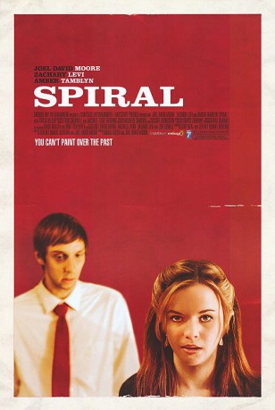

#9222 The Spiral - Tödliches Geheimnis
Alternativ: Spiral
 
 IMDB-Wertung: 6.5 / 10
IMDB-Wertung: 6.5 / 10  Metascore: 0
Metascore: 0 
A reclusive telemarketer has only one semblance of a friend: His telecommuter boss. But the telemarketer's social circle seems to improve greatly when a whimsical co-worker enters his life. Only, as he begins to sketch his new friend's portrait, disturbing "voices" from the phone man's past threaten to lead him into a network of destruction.
Jahr: 2007
Dauer: 90 Minuten
FSK:
Land: USA Studio: Anchor Bay EntertainmentTonspuren: DTS - ,
Untertitel:
Auflösung: 1080p (1920x1080) Größe: 9431 MB
Genre: Thriller, Drama
Regisseur: Adam Green, Joel David Moore
Drehbuch: Jeremy Danial Boreing
Soundtrack: Todd Caldwell, Michael Fish Herring
Darsteller:
- Annie Neal als Diana - The Waitress
 Joel David Moore als Mason
Joel David Moore als Mason Zachary Levi als Berkeley
Zachary Levi als Berkeley Amber Tamblyn als Amber
Amber Tamblyn als Amber- Nick Sowell als Record Shop Employee
- David Muller als Will
 Tricia Helfer als Sasha
Tricia Helfer als Sasha Rileah Vanderbilt als Girl on Bus
Rileah Vanderbilt als Girl on Bus- Todd Chatalas als Phone Bank Employee
- John Hugill als Phone Bank Employee
- Todd A. Robinson als Phone Bank Employee
- Jeremy Danial Boreing als Concerned Employee (uncredited)
- Reuben Rox als Record Store Customer (uncredited)
- Lori Yohe als Valerie
- Ryan Chase als Chad
- Rose Weiker als Street Musician
- Patrick Semmes als Ticket Taker
- Jenson Segui als Boy in Cemetery
- Mary Benson als Grandmother in Cemetery
- Sean Bailey als Phone Bank Employee
- Aundre Barnes als Phone Bank Employee
- Deb Blume als Phone Bank Employee
- Arlene Ancheta als Phone Bank Employee
- Spencer Conway als Phone Bank Employee
- Amber Dahl als Phone Bank Employee
- Andrew Danhorn als Phone Bank Employee
- Courtney Davis als Phone Bank Employee
- Judd Eustice als Phone Bank Employee
- Matt Kimmel als Phone Bank Employee
- Teresa Koberstein als Phone Bank Employee
- Kristen Luman als Phone Bank Employee
- Cathi-Jo McCoy als Phone Bank Employee
- Bryna Smith als Phone Bank Employee
- Traci Vitale als Phone Bank Employee
- Kai Evans als Boy feeding ducks (uncredited)
- Heather Wakehouse als Park Goer (uncredited)
Datei: X:\2007(N-Z)\Spiral - Tödliches Geheimnis, The (2007, FSK, 1920x1080).mkv seit 20.07.2018
Festplatte: HD 2007(A-Z)-2008(A-F)
 Es gibt insgesamt 56 Filme in der Gruppe '2007(N-Z)'
Es gibt insgesamt 56 Filme in der Gruppe '2007(N-Z)'